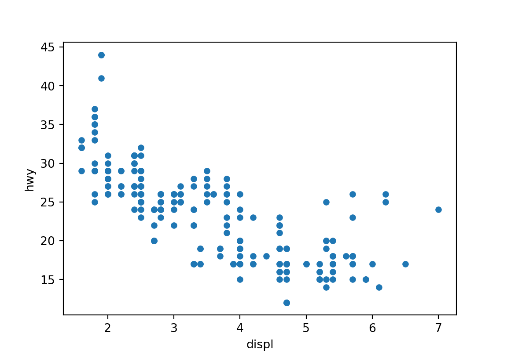

A R과 Python 연동하기
R의 reticlate 패키지를 사용하면 R과 Python을 쉽게 연동시킬 수 있다.
reticulate 패키지는 다음 세 가지 기능을 수행한다.
- R에서 Python을 호출하는 기능: R 스크립트, R 마크다운 문서, R 세션 중간에 파이썬 스크립트나 파이썬 모듈을 호출할 수 있다.
- R과 Python 객체 간의 상호 변환: R의 데이터프레임과 파이썬의 Pandas 데이터프레임, R의 행렬/배열과 파이썬 Numpy 배열을 상호 변환해 준다.
- Python의 다양한 설치 환경과의 연동: 시스템 내에는 다양한 버전의 파이썬이 존재할 수 있다.
reticulate는 가상 환경(virtual environments)이나 콘다 환경(Conda environments)의 파이썬 버전 등과 연동할 수 있다.
다음 설명은 이미 시스템에 파이썬이 설치되어 있고 독자가 파이썬에 대한 기본 지식을 가지고 있다고 가정한다. 파이썬은 다양한 형식으로 설치가 가능한데, 콘다 환경을 사용하면 독립적인 파이썬 환경을 구축하기 편리하다. 파이썬 설치에 대해서는 인터넷 등에서 관련 정보를 찾아보기 바란다.
A.1 reticulate 설치 및 사용할 파이썬 버전 설정
다음 명령이나 RStudio 패키지 탭을 이용하여 reticulate 패키지를 설치한다.
설치가 잘 되었으면 reticulate 패키지를 적재해 보자.
하나의 시스템에는 여러 버전의 파이썬이 설치되어 있는 경우가 자주 있다.
그렇다면 reticulate는 시스템 내의 어떤 버전의 파이썬과 연동을 하게 될까?
reticulate는 다음처럼 파이썬에서 사용할 모듈을 import() 함수로 호출한다.
reticulate는 맨 처음 import 되는 모듈을 시스템 내에 설치된 파이썬 버전들에서 차례로 검색하고, 해당 모듈이 맨 처음 발견된 파이썬 버전과 연동을 한다. 그리고 이후의 R에서의 파이썬 호출은 최초로 연동된 파이썬 버전에서 계속 수행하게 된다.
만약 해당 모듈이 여러 곳의 파이썬 버전에 존재한다면 어떻게 될까?
reticulate는 파이썬 모듈을 찾을 때 다음 순서로 파이썬 버전을 검색한다.
- 사용자가 만약 시스템에
RETICULATE_PYTHON환경 변수를 설정해 두었다면, 환경 변수에 설정된 경로에 설치된 파이썬에서 가장 먼저 모듈을 검색한다..Rprofile에 해당 환경 변수를 설정하려면 다음 명령처럼 설정을 한다. (그러나 이는 경직된 형태로 파이썬 검색 순서를 지정한 것이므로 일반적 상황에서는 권장되지 않는다.)
- 사용자가
use_python(),use_vertualenv(), 또는use_condaenv()를 사용하여 설정한 파이썬 버전을 그 다음으로 검색한다.use_python()은 파이썬이 설치된 경로를 지정할 때,use_vertualenv()나use_condaenv()는 설치되어 있는 가상 환경이나 콘다 환경이 사용되도록 지정할 때 사용한다.
use_condaenv()에서 콘다 설치가 여러 개인 경우에는 특정 콘다 설치 경로를 지정하여 원하는 콘다 환경을 찾을 수 있다.
그런데 use 함수들은 파이썬 버전을 찾을 힌트를 제공하는 것이지 실제 파이썬 버전을 찾는 작업을 수행하지는 않는다.
그러므로 지정된 경로나 환경이 없어도 해당 명령은 오류가 발생하지 않는다.
만약 해당 파이썬 버전이 있는지 확인하려면 use 함수에 required=TRUE 인수를 추가하여 실행한다. 그러면 해당 파이썬 버전이 실제 존재하지 않으면 오류가 발생한다.
사용자가 사용할 파이썬 버전을 환경 변수나
use함수로 설정하지 않았으면,reticulate는 다음으로 사용자의 파이썬 가상 환경이나 콘다 환경을 검색한다. 가상 환경과 콘다 환경이 발견되면, 가상 환경과 콘다 환경에서 해당 모듈을 검색한다.다음으로 사용자 시스템 경로(
PATH) 상의 파이썬 설치 위치를 검색한다. 시스템 경로에서 발견되는 파이썬이 어디에 설치되어 있는지를 확인하려면 다음 명령을 수행한다. 사용자의 시스템의 종류와 설치 방법에 따라 출력 결과는 서로 다를 수 있다.
python
"/home/khkim/miniforge3/bin/python" - 마지막으로 사용자들이 파이썬을 주로 설치하는 일반적인 경로를 검색하여 파이썬 버전을 찾아 해당 모듈을 검색한다.
파이썬 모듈을 import 할 때 어떤 버전의 파이썬이 먼저 검색는지를 확인하려면 다음 명령을 사용한다.
python: /home/khkim/miniforge3/bin/python3
libpython: /home/khkim/miniforge3/lib/libpython3.10.so
pythonhome: /home/khkim/miniforge3:/home/khkim/miniforge3
version: 3.10.15 | packaged by conda-forge | (main, Sep 30 2024, 17:51:04) [GCC 13.3.0]
numpy: [NOT FOUND]
python versions found:
/home/khkim/miniforge3/bin/python3
/home/khkim/miniforge3/bin/python시스템에 하나 이상의 파이썬이 설치되어 있다면, 실행의 일관성을 확보하기 위하여 use 함수들을 사용하여 사용할 파이썬 버전을 지정할 것을 권장한다. 다음은 dm이라는 콘다 환경에서 파이썬 모듈을 먼저 찾도록 하는 명령이다.
A.2 R과 파이썬 연동하는 방법
R에서 파이썬을 연동하는 방법은 크게 다음 4 가지 방법이 있다.
- R 마크다운 문서에서 파이썬 명령 실행하기: R 마크다운의 파이썬 엔진이 마크다운 문서 전 범위에서 하나의 파이썬 세션으로 R 마크다운에 기술된 파이썬 명령문을 실행시킨다. 그리고 파이썬 세션의 결과를 R로, R 세션의 결과를 파이썬으로 주고 받을 수 있다.
- 파이썬 모듈을 R 세션에서 연동하기:
import()함수로 파이썬 모듈을 R에 연동시켜서 R에서 직접 파이썬 모듈의 함수를 호출하여 결과를 받을 수 있다. - 파이썬 스크립트 실행하기:
source_python()함수를 사용하여 R 세션에서 파이썬 스크립트를 실행할 수 있다. 그러면 파이썬 명령문을 통해 생성된 파이썬 함수와 객체를 R 세션에서 사용할 수 있다. - 파이썬 REPL 실행하기:
repl_python()함수를 사용하여 R 내에서 대화형으로 파이썬 콘솔 환경을 생성할 수 있다. 이 경우에도 R 세션과 파이썬 세션은 서로 객체를 주고 받을 수 있다.
A.3 파이썬 모듈 연동하기
import() 함수를 사용하면 파이썬 모듈을 호출할 수 있다.
호출된 모듈은 R 변수에 할당하여야 해당 파이썬 모듈을 사용할 수 있다.
다음은 Numpy 모듈을 R에서 연동시킨 예이다.
연동된 모듈이 제공하는 함수나 객체는 $ 연산자를 사용하여 이용할 수 있다.
다음은 Numpy 모듈의 full() 함수를 이용하여 1로만 이루어진 \(3 \times 3\) 배열을 만든 예이다.
[,1] [,2] [,3]
[1,] 1 1 1
[2,] 1 1 1
[3,] 1 1 1이 때 주의해서 이해해야 하는 것은 위의 np$full() 함수의 실제 기능은 Numpy 모듈의 full()이라는 파이썬 함수가 제공하고, np$full() 함수는 R의 껍데기 함수라는 것이다.
import() 함수로 파이썬 모듈을 연동시키면 파이썬의 함수와 객체와 연동되는 R의 껍데기 함수와 객체가 생성된다.
R 세션에서는 파이썬 함수에 직접 접근하는 방법은 없으며, 이 껍데기 함수와 객체를 통해서 파이썬의 함수와 객체에 접근하게 된다. (Figure A.1 참조)

Figure A.1: R에서 Python 함수의 호출
따라서 np$full() 함수를 호출할 때는 R 형식의 인수를 제공해야 하지, Python 형식의 데이터를 입력해서는 안 된다.
원래 Numpy의 full() 함수는 shape 인수에 정수나 정수의 시퀀스(sequence) 형식의 데이터를 입력하여야 한다.
다음은 파이썬에서의 원래 명령문과 실행 결과를 보여준다.
array([[1, 1, 1],
[1, 1, 1],
[1, 1, 1]])그러나 np$full() 함수는 R 함수이므로 shape 인수에 파이썬의 정수 형식이나 정수의 시퀀스 형식에 대응하는 R 형식 데이터를 입력하여야 한다.
그러면 reticulate는 R 형식의 인수를 파이썬 형식의 데이터로 변환하여 파이썬의 np.full() 함수를 호출한다.
그리고 다시 파이썬의 np.full() 함수가 Numpy 배열 형식으로 데이터를 반환하면 reticulate는 Numpy 배열에 대응되는 R 형식인 행렬 또는 배열로 변환하여 R 세션에 결과를 전달한다.
A.3.1 R과 Python의 형식 변환
R과 파이썬은 reticulate를 통하여 다음처럼 형식 변환된다.
| R | Python | R에서의 예 |
|---|---|---|
| 요소가 하나인 벡터 | 스칼라 | 1, 1L, TRUE, "foo" |
| 요소가 둘 이상인 벡터 | 리스트 | c(1, 2, 3), c(1L, 2L) |
| 여러 형식을 포함한 리스트 | 튜플 | list(1L, TRUE, "foo") |
| 이름이 있는 리스트 | 딕셔너리 | list(a = 1L, b = 2) |
| 행렬/배열 | Numpy 배열 | matrix(1:4, nrow=2, ncol=2) |
| 데이터프레임 | Pandas 데이터프레임 | data.frame(x=1:4, y=LETTERS[1:4]) |
| 함수 | 함수 | function(x) x+1 |
| Raw | 바이트 배열 | as.raw(1:10) |
| NULL, TRUE, FALSE | None, True, False | NULL, TRUE, FALSE |
만약 사용자가 정의한 클래스의 파이썬 객체가 전달되어야 하면, 해당 객체의 R 참조자가 반환된다. 그러면 R에서 파이썬 모듈에 접근할 수 있는 것과 유사한 방법으로 파이썬 객체의 메쏘드와 속성을 R 참조자 객체를 이용하여 접근할 수 있다.
A.3.1.1 정수 형식의 데이터 변환의 주의점
그런데 이러한 자동 형 변환에서 주의해야 할 점이 있다. R에서는 숫자 데이터는 정수나 실수나 모두 double 형식으로 자동으로 변환되어 처리하는 경우가 많다. 예를 들어 다음처럼 3이라는 정수 두 개로 이루어진 벡터는 정수로 처리되는 것이 아니라 부동소수점 형식인 double로 데이터가 처리된다.
[1] "double"그런데 파이썬에서는 정수 형식과 실수 형식의 데이터를 엄격하게 구별하여 처리한다. 따라서 파이썬 함수에서 정수 값이 인수이여야 하는 곳에 무심코 다음 같이 R 데이터를 입력하면 파이썬에서 함수가 실행될 때 데이터 형식이 맞지 않아 오류가 발생한다.
'float' object cannot be interpreted as an integer그렇기 때문에 앞에서 np$full() 함수의 shape 인수를 부여할 때, 3L로 정수형 데이터임을 명시적으로 표현하였다.
그러면 R도 형변환이 필요하기 전까지는 이 값을 double 형식이 아니라 integer 형식으로 저장하고 처리한다.
[1] "integer" [,1] [,2] [,3]
[1,] 1 1 1
[2,] 1 1 1
[3,] 1 1 1A.3.1.2 리스트, 튜플, 딕셔너리 형식으로 변환할 때 주의점
자동 형 변환에서 또 하나 주의할 점은 파이썬에서 리스트나 튜플을 인수로 원할 때이다. 파이썬에 정수 하나로 이루어진 리스트나 튜플을 전달한다고 하자. 파이썬에서는 정수 자체와, 정수 하나로 이루어진 리스트와 튜플은 서로 다른 형식의 데이터이다.
<class 'int'><class 'list'><class 'tuple'>그러나 R에서는 스칼라 형식은 없으므로 정수 하나도 모두 벡터로 표현된다.
그런데 파이썬에서는 스칼라 형식이 매우 자주 사용되므로 R의 요소 하나짜리 벡터는 모두 해당 형식의 스칼라로 자동 변환된다.
그러므로 반드시 파이썬의 리스트나 튜플 형식으로 데이터를 전달하려면 다음처럼 R의 리스트와 reticulate의 tuple() 함수를 사용한다.
다음에 사용된 r_to_py() 함수는 R 객체를 파이썬 객체로 변환하는 함수이다.
[1] "python.builtin.int" "python.builtin.object"[1] "python.builtin.list" "python.builtin.object"[1] "python.builtin.tuple" "python.builtin.object"R의 이름 붙은 리스트는 파이썬의 딕셔너리로 잘 변환이 된다.
그러나 R의 리스트는 요소의 이름으로 문자열만 사용할 수 있는 반면, 파이썬의 딕셔너리의 키 값은 더 복잡한 불변하는 객체가 될 수 있다. 따라서 R에서 좀 더 복잡한 파이썬 딕셔너리를 인수로 전달하고자 하면, reticulate의 dict() 함수를 사용한다.
[1] "list"$year
[1] 3
$major
[1] "me"
$name
[1] "홍길동"[1] "python.builtin.dict" "python.builtin.object"{'year': 3.0, 'major': 'me', 'name': '홍길동'}[1] "python.builtin.dict" "python.builtin.object"{'name': '홍길동'}아울러 R은 벡터와 리스트 등의 인덱싱이 1부터 시작하지만, 파이썬의 리스트, 튜플 등의 시퀀스 객체는 0부터 인덱싱이 시작하니 이러한 차이에 주의하여야 한다.
A.3.2 형변환 직접 하기
reticulate의 기본 설정은 파이썬 객체를 R 세션으로 전달할 때 대응되는 R 객체로 자동 변환한다.
만약 파이썬 객체를 R 객체로 자동 변환하지 않고, 파이썬 객체의 R 참조자를 반환하게 하려면 import() 함수에 convert=FALSE 인수를 전달한다.
그러면 파이썬의 결과는 모두 R 참조자로 전달되므로, R에서 전달된 참조자로 다시 파이썬 객체의 메쏘드 등을 실행할 수 있다.
마지막에 R로서 결과를 확인하려면 py_to_r() 함수를 사용하여 R 참조자가 참조하는 파이썬 객체를 R 객체로 변환하여야 한다.
array([1, 2, 3, 4])[1] "numpy.ndarray" "python.builtin.object"45.0[1] 5A.3.4 pickle 사용하기
파이썬에서는 객체들을 바이너리 형식으로 저장할 때 pickle 모듈을 자주 사용한다.
파이썬 모듈의 결과를 파이썬 객체 형식으로 파일에 저장하거나, 이미 파이썬에서 작업하여 바이너리 형식으로 저장된 데이터를 읽어오려면 py_save_object()와 py_load_object() 함수를 사용한다.
읽어들인 파이썬 객체가 자동으로 R 객체로 형변환된 것을 확인할 수 있다.
array([1, 2, 3, 4])py_save_object(a, filename = "a.p") # 파이썬 객체 저장
b <- py_load_object(filename = "a.p") # 저장된 파이썬 객체 읽어오기
b[1] 1 2 3 4A.4 R 마크다운 문서에서 파이썬 명령 실행하기
R 마크다운 문서는 일반적으로 마크다운으로 형식화된 문서 정보와 R 명령 모듬(chunks)으로 구성된다.
R 마크다운 문서를 직조(knitting)하면 R 명령문 모듬이 실행되어 그 결과가 문서의 다른 부분과 결합하여 문서가 동적으로 완성된다.
R 마크다운 문서에는 R 명령 모듬뿐 아니라 Python 명령 모듬도 포함시킬 수 있다.
그러면 reticulate의 파이썬 엔진이 파이썬 명령 모듬을 실행하여 문서에 포함되도록 한다.
reticulate의 파이썬 엔진의 주요 기능은 다음과 같다.
- R 마크다운을 직조하는 하나의 R 세션 안에 포함된 파이썬 세션을 만들고, 이 하나의 파이썬 세션에서 파이썬 명령 모듬을 실행시킨다.
- 파이썬 명령 모듬의 파이썬 실행 결과를 적절한 형식으로 출력하여 문서에 포함시킨다. 특히 파이썬의
numpy,pandas,matplotlib모듈의 그래프 결과를 적절한 형식으로 처리하여 출력한다. - R 세션에서 파이썬 모듬에서 생성한 객체를 접근할 수 있도록 해 준다. R 세션에
py라는 객체가 생성되어py$x형식으로 파이썬 세션에 생성된x객체에 대한 참조자를 제공한다. - 파이썬 세션에서 R 모듬에서 생성한 객체 접근할 수 있도록 해 준다. 파이썬 세션에
r이라는 객체가 생성되어r.x형식으로 R 세션에 생성된x객체에 대한 참조자를 제공한다.
아울러 파이썬 세션에 R 객체가 전달될 때, R 세션에 파이썬 객체가 전달될 때 상호 자동 변환이 이루어진다.
다음은 R의 ggplot 패키지의 mpg 데이터를 파이썬 모듬에 전달하여 그래프를 그리고 통계 요약한 후, 그 결과를 다시 R로 보내서 출력한 예이다.
# A tibble: 234 × 11
manufacturer model displ year cyl trans drv cty hwy fl class
<chr> <chr> <dbl> <int> <int> <chr> <chr> <int> <int> <chr> <chr>
1 audi a4 1.8 1999 4 auto… f 18 29 p comp…
2 audi a4 1.8 1999 4 manu… f 21 29 p comp…
3 audi a4 2 2008 4 manu… f 20 31 p comp…
4 audi a4 2 2008 4 auto… f 21 30 p comp…
5 audi a4 2.8 1999 6 auto… f 16 26 p comp…
6 audi a4 2.8 1999 6 manu… f 18 26 p comp…
7 audi a4 3.1 2008 6 auto… f 18 27 p comp…
8 audi a4 quattro 1.8 1999 4 manu… 4 18 26 p comp…
9 audi a4 quattro 1.8 1999 4 auto… 4 16 25 p comp…
10 audi a4 quattro 2 2008 4 manu… 4 20 28 p comp…
# ℹ 224 more rows# 파이썬 모듬 1
import matplotlib.pyplot as plt
r.mpg.plot(x = "displ", y = "hwy", kind = "scatter") # 배기량 vs. 고속도로연비 산점도
plt.show() 
class
2seater 15.400000
compact 20.127660
midsize 18.756098
minivan 15.818182
pickup 13.000000
subcompact 20.371429
suv 13.500000
Name: cty, dtype: float642024년 10월 현재 R 마크다운에서 파이썬의 matplotlib로 그래프를 그릴 때 다음과 같은 오류가 발생할 때가 있다.
libtiff.so.6: undefined symbol: jpeg12_write_raw_data, version LIBJPEG_8.0만약 이러한 오류가 발생하면 해결책 중 하나는 libtiff를 다음처럼 4.5.1 버전으로 낮추는 것이다.
conda를 사용하고 있다면 R과 연동되는 가상환경에서 다음 명령을 수행한다.
conda install -c conda-forge libtiff=4.5.1이에 대한 좀 더 자세한 논의는 conda-forge의 libtiff 관련 이슈 논의를 참조한다.